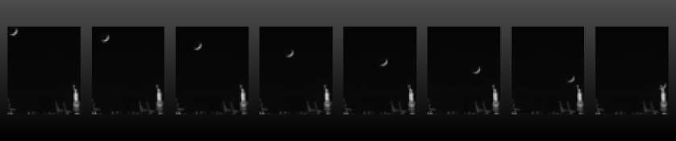

TensorFlow: Image Forecasting
Lunar Astronomy Forecasting Using a 5D Time Series of Shifting Windows.

Although the pipeline runs successfully, this tutorial is considered a ‘work in progress’ in that the model architecture still needs a bit of work. Here we attempt an self-supervised walk forward with an autoencoder whose evaluation data is shifted 2 frames forward. The goal is to show an image to the model and have it infer what that image will look like 2 steps in the future.
Example Data
Reference Example Datasets for more information.
This dataset is comprised of:
Features = folder of images that represent a time series
Target = we will shift that time series forward 2 frames using a
window
[2]:
from aiqc import datum
from aiqc.orm import Dataset
[3]:
folder_path = 'remote_datum/image/liberty_moon/images'
image_dataset = Dataset.Image.from_folder(folder_path=folder_path, ingest=False, retype='float64')
🖼️ Ingesting Images 🖼️: 100%|███████████████████████| 15/15 [00:00<00:00, 117.16it/s]
[4]:
images_pillow = image_dataset.to_pillow(samples=[0,7,12])
[5]:
images_pillow[0]
[5]:
[6]:
images_pillow[1]
[6]:
[7]:
images_pillow[2]
[7]:

Pipeline
Reference High-Level API Docs for more information.
[8]:
from aiqc.mlops import Pipeline, Input, Target, Stratifier
from sklearn.preprocessing import FunctionTransformer
from aiqc.utils.encoding import div255, mult255
[12]:
pipeline = Pipeline(
inputs = Input(
dataset = image_dataset
, window = Input.Window(size_window=1, size_shift=2)
, encoders = Input.Encoder(FunctionTransformer(div255, inverse_func=mult255))
, reshape_indices = (0,3,4)#reshape for Conv1D grayscale.
),
stratifier = Stratifier(size_test=0.25)
)
Modeling
Reference High-Level API Docs for more information.
[19]:
from aiqc.mlops import Experiment, Architecture, Trainer
import tensorflow as tf
from tensorflow.keras import layers as l
[14]:
def fn_build(features_shape, label_shape, **hp):
m = tf.keras.models.Sequential()
m.add(l.Conv1D(64*hp['multiplier'], 3, activation=hp['activation'], padding='same'))
m.add(l.MaxPool1D( 2, padding='same'))
m.add(l.Conv1D(32*hp['multiplier'], 3, activation=hp['activation'], padding='same'))
m.add(l.MaxPool1D( 2, padding='same'))
m.add(l.Conv1D(16*hp['multiplier'], 3, activation=hp['activation'], padding='same'))
m.add(l.MaxPool1D( 2, padding='same'))
# decoding architecture
m.add(l.Conv1D(16*hp['multiplier'], 3, activation=hp['activation'], padding='same'))
m.add(l.UpSampling1D(2))
m.add(l.Conv1D(32*hp['multiplier'], 3, activation=hp['activation'], padding='same'))
m.add(l.UpSampling1D(2))
m.add(l.Conv1D(64*hp['multiplier'], 3, activation=hp['activation']))
m.add(l.UpSampling1D(2))
m.add(l.Conv1D(50, 3, activation='relu', padding='same'))# removing sigmoid
return m
[15]:
def fn_train(
model, loser, optimizer,
train_features, train_label,
eval_features, eval_label,
**hp
):
model.compile(
optimizer = optimizer
, loss = loser
, metrics = ['mean_squared_error']
)
model.fit(
train_features, train_label
, validation_data = (eval_features, eval_label)
, verbose = 0
, batch_size = hp['batch_size']
, callbacks = [tf.keras.callbacks.History()]
, epochs = hp['epoch_count']
)
return model
[16]:
hyperparameters = dict(
epoch_count = [150]
, batch_size = [1]
, cnn_init = ['he_normal']
, activation = ['relu']
, multiplier = [3]
)
[20]:
experiment = Experiment(
Architecture(
library = "keras"
, analysis_type = "regression"
, fn_build = fn_build
, fn_train = fn_train
, hyperparameters = hyperparameters
),
Trainer(
pipeline = pipeline
, repeat_count = 1
)
)
[21]:
experiment.run_jobs()
📦 Caching Splits 📦: 100%|██████████████████████████████████████████| 2/2 [00:00<00:00, 320.73it/s]
🔮 Training Models 🔮: 100%|██████████████████████████████████████████| 1/1 [00:08<00:00, 8.66s/it]
Visualization & Interpretation
For more information on visualization of performance metrics, reference the Dashboard documentation.